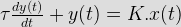

- The material to be used in the manufacture of a standard resistance should be of
Small temperature coefficient is required order that variation in resistance values owing to change in order that the size of resistor is small.
- The resistance elements having least resistance temperature coefficient is
Manganin is an alloy of copper manganense and nickel and is universally used as resistance material has almost a zero temperature coefficient of resistance near about room temperature.
- In resistors two wire side by side in opposite direction are wound in order to
In resistor two wire side by side in oppsite direction are wound. The two wire produce two magnetic fields which are equal but are in opposite direction and therefore the field neutralize each other. Thus the coil inductance will be reduce.
- Wire wound resistor are unsuitable for use high frequence because
Wire wound resistor are like a coils they have more undesirable inductance than other type of resistor. Although winding the wire in sections with alternately reversed direction can minimize inductance. The high frequency response of wire wound resistor is substantically worse than of a compisition resistor.
- Which one of the following techniques reduce the residual inductance of standard resistance?
The resistor consists of a coil of margine wire non inductivley wound on metal bobbin. The winding is known as bifler winding. In this method the wire is double itself. This gives the effect of two wire, side by side, carrying currnet in oppositive directions. The two wires produce two magnetic fields which are equal but are in the opposite direction and therefore, the field neutralize each other. Thus the resisual inductance is reduced.
- If R, L and C are the parameters of resistor, what is the condition for the resistor to be non inductive?
The resistor is non inductive when L = CR2
- Commonly used standard capacitor is
As the capcacitance is calculated by ssuming no fringing and hence a guard ring, which are maintained at the same potential as the outer cylinder but not directly connected to inner cylinder is necessary. Any fringing takes place between the outer and inner cylinders. Thereby concentric cylinder type with guard ring is commonly used as standard capacitor.
- Analog panel meters basically measure
An analog meter is one which the output or display is a continuous function of time and bears a constant relation to its input. It basically depends upon parameters i.e. current, energy, volatge, power, frequency etc.
- A first order instrument is charrectorized by.
A first order instrument has an outout which is given by a non homogeneous first order linear differential equation

Where τ is a constant of the instrument. In these instruments there is a time delay in there response to changes of input. As the equation has a relation of input and output, so static sensitivity is also characterized the first order instrument. - An indicationg instrument is more sensitive if its torque to weight ratio is
If pointer have less weight, it will be having torque/weight ratio so that even for a very small deflection pointer starts moving and indicates the measured value. If an indicating instrument should be more sensitive, then the otrque to weight ratio will be much larger than unity.
- In eddy current damping system, the disc employed should be of
The disc made conducting but non magnetic material like as copper, aluminium moves in a magnetic field so as to cut through the magnetic flux. Thus eddy currents are set up in the disc.
- Torquel weight ratio of an instrument indicates
Torque/weight ratio an instrument indicates senstivity. If a pointer is having less weight, it will be having high torque/weight ratio so that even for a very small deflection pointer starts moving and indicates measured value.
- The spring material used in a spring control device should have the following property
The essential requirments for instrument spring are
1. They should be non magnetic.
2. They should ne proof from mechanical fatigure.
3. Where springs are used to load current into moving system they should have a small resistance, their cross section area must be sufficient to carry the current without temparature rise which effects their constant. They should also have low temperature coefficient. - The most suitable material for use as spring material for most of the applications execepts in low resistance instruments, is
A number of non magnetic materials like silicon bronze, hard rolled silver or copper, platinum silver, German silver have been used but not found satisfactory owing to some reason. For most apllications phosphor bronze has been the most suitable matrial except in instrument of low resistance.
- Which one of following meters is an integrating type instrument?
Intergrating instruments that record totalised events over specified period of time. Watt hout (energy) meter is the product of time and electrical quantity. So the energy meter is an integrating type instrument.
- The high torque by weight ratio in an analog indicating instrument indicates
The high torque to weight ratio of an instrument indicates the good sensitivity. Thereby the instrument gives fast response of measurement.
- Which of following properties a damping oil must possess
The essential requirment for damping oil are
1. The oil must be a good insulator.
2. The oil should not have corresive action upon the metal vane.
3. The oil should be non evaporating.
4. As the viscority of oil is greater the damping force is also correspondingly grater. So the viscority of the oil should not change with the temperature rise. - An instrument is said to be dead beat when it is
When the moving system moves rapidly but smoothly to its final stedy position, the instrument is said to be dead beat and it is occur when the system is critically damped.
- The house hold energy meter is
House hold energy meters are those which measure the total quantity of electricity deliveres in a particuler time. Thereby it is an integrating instrument.
- Ideally damping torque should be
A damping torque is required to act in a direction opposite to the movement of the moving system. Damping torque increase with the anguler velocity of moving system and it it does not depends upon the operating current.
Design with  by SARU TECH
by SARU TECH
www.sarutech.com
Content Credited to electrical4u.com
Online Electrical Engineering Study Site